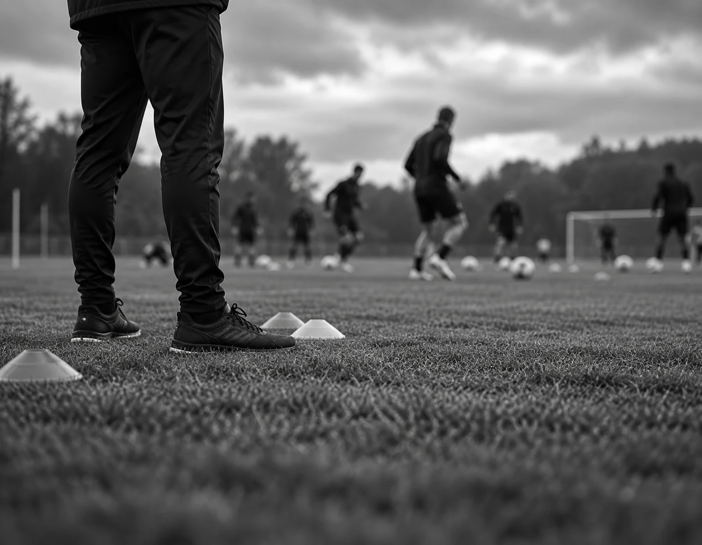

EL RECORRIDO CUENTA UNA HISTORIA.Datos ilustrativos de esta demo.
01 / TRAYECTORIA
Cada escudo, una etapa.
Contextos distintos. La misma convicción: hacer crecer al equipo desde una idea compartida.
2023 — 2026ÚLTIMA ETAPA
Puerto Sur FC
Director técnico · Primer equipo
Ver esta etapa
Desarrollo del modelo de juego, coordinación del cuerpo técnico y planificación de la temporada. La etapa culmina con un título de liga dentro de esta historia ficticia.
LIGA DEL SUR · 2024
2020 — 2023CONSOLIDACIÓN
Atlético Delta
Director técnico · Primer equipo
Ver esta etapa
Construcción de un plantel competitivo, seguimiento individual y análisis del rival. Copa Ciudad del Delta en la temporada de ejemplo 2021.
COPA DELTA · 2021
2016 — 2020EL PUNTO DE PARTIDA
Unión Sierra
Formación · Reserva · Primer equipo
Ver esta etapa
Trabajo con categorías de formación, incorporación de futbolistas al primer equipo y desarrollo de una metodología compartida.
DESARROLLO DE TALENTO
Clubes y temporadas creados para mostrar cómo puede presentarse un recorrido profesional.
02 / PALMARÉS
El trabajo. Y su huella.
Los momentos que forman parte del recorrido de un equipo.
★
2024
Liga del Sur
Puerto Sur FC
CAMPEÓN · EJEMPLO FICTICIO
★
2021
Copa Ciudad del Delta
Atlético Delta
CAMPEÓN · EJEMPLO FICTICIO
03 / MODELO DE JUEGO
Una idea que se ve en la cancha.
La estructura cambia con el momento del juego. Los principios le dan continuidad.
4 — 3 — 3
Amplitud para encontrar espacios.
Salida con apoyos, extremos abiertos y un mediocampo que conecta líneas. La pelota como punto de encuentro.
Tocá las fases para explorar la pizarra.
MR / PIZARRA TÁCTICAFASE OFENSIVA
1362458101197
ESTRUCTURA DEL EQUIPODIRECCIÓN DE ATAQUE

LA SEMANA TAMBIÉN SE JUEGA.
04 / EL TRABAJO DIARIO
Preparar. Competir. Volver a construir.
01
Planificación con propósito
Cada sesión conecta con lo que el equipo necesita para el próximo partido.
02
Una mirada compartida
Campo, video y conversación para que todos entiendan la misma idea.
03
El grupo, primero
Roles claros y seguimiento individual dentro de un objetivo colectivo.
EL PRÓXIMO CAPÍTULO
Las buenas ideas empiezan con una conversación.
Así puede verse tu trayectoria: con tu identidad, tus clubes y tus materiales.